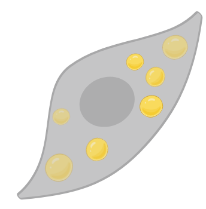

This section includes other types of apps.
Related to skeletal muscle or not. Potentially of interest!
Related to skeletal muscle or not. Potentially of interest!
Global VO2max
Worldwide reference values for maximal oxygen uptake in 20 to 80 years old men and women.

Scientific Niche
This app visualizes how a specific research topic intersects with broader scientific fields.

Polarized Macrophages
Curated transcriptome of human and mouse macrophages polarized into M1/M2 phenotypes.

Palmitate in Myotubes
Transcriptomic response of skeletal myotubes exposed to the saturated fatty acid palmitate in vitro.